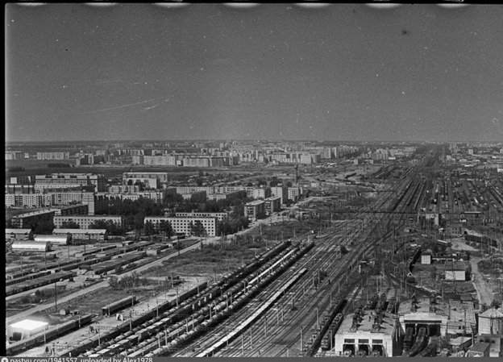

Основание и первые год (1864 – 1913 гг.)
Истоки Тюменского железнодорожного узла Текст: История депо неразрывно связана с освоением Сибири. Еще в 1864 году полковник Е. В. Богданович обосновал необходимость железной дороги до Тюмени как средства стратегического значения.
История эксплуатационного вагонного депо Войновка неразрывно связана с развитием Тюменского железнодорожного узла. В начале 1970-х годов, в связи с бурным освоением нефтегазовых месторождений Севера, станция Войновка стала ключевым пунктом распределения грузов. Депо было сформировано для обеспечения технического обслуживания растущего парка грузовых вагонов, направляемых на Сургут и Нижневартовск.
1885 год: Введен в эксплуатацию участок Свердловск — Тюмень. Именно тогда появилось первое каменное здание для ремонта — «вагонный сарай», где одновременно могли обслуживаться четыре двухосных вагона.
1913 год: Запуск линии Тюмень — Омск, которая окончательно утвердила Тюмень как важнейший транспортный узел, соединяющий бассейны Волги и Оби.


Рождение самостоятельного депо (1933 – 1945 гг.)
Становление вагонного хозяйства
До 1933 года ремонт вагонов был лишь цехом при паровозном депо. Но индустриализация требовала перемен.
3 июля 1933 года: Вышло историческое Постановление ЦК ВКП(б), согласно которому вагонное хозяйство стало самостоятельной отраслью.
Предвоенные годы: В 1934–1936 гг. депо получило мощную базу: автоконтрольный пункт, механический и кузнечный цеха, котельную.
Великая Отечественная война: Тюменские железнодорожники обеспечивали бесперебойную работу фронтового транспорта. В 1943 году на базе депо была сформирована легендарная вагоноремонтная колонна №57.


Эпоха модернизации (1950 – 1969 гг.)
От пара к тепловозам и нефтяному буму
Вторая половина XX века стала временем технической революции.
1959 год: В Тюмень прибыл первый тепловоз ТЭ3, начался отказ от паровозной тяги и полная переподготовка кадров.
1966 год: Открытие нефтяных месторождений на Севере потребовало строительства пути до Тобольска. С этого момента все перевозки «черного золота» пошли через наш участок пути.
С октября 1961 года депо окончательно переходит на специализацию по текущему безотцепочному и отцепочному ремонту вагонов.


Рождение ВЧДЭ Войновка (1970 г. – по настоящее время)
Перенос мощностей на станцию Войновка
Современный облик депо начал формироваться в 70-х годах, когда центр тяжести грузовой работы сместился на новую сортировочную станцию.
9 апреля 1970 года: Официальная дата — ПТО Войновка утвержден основным пунктом технического осмотра и укрупненного ремонта.
С 1972 года на Войновке внедряется механизация ручных работ, строятся современные компрессорные станции и ремонтные агрегаты.
Сегодня: Эксплуатационное вагонное депо Войновка (ВЧДЭ-19) — это ключевое предприятие Свердловской железной дороги, обеспечивающее безопасность движения на главном ходу Транссиба.
История подразделений и станций
История: Открыта в октябре 1913 года в составе магистрали Тюмень-Омск. Название происходит от реки Боганды (тат. «недалекое место»).
Железнодорожный факт: В 1923 году поселок состоял всего из 7 домов, где жили семьи путеобходчиков, стрелочников и ремонтников.
Сегодня: Крупный промышленный узел с нефтеперерабатывающим заводом и линейно-производственным управлением газопроводов.
История: Сооружалась на средства сибирских купцов. Купец Шипулин выделил самую крупную сумму, поэтому в Вагае построили самый красивый каменный вокзал на участке.
Железнодорожный факт: Вокзал, депо и водонапорная башня построены из уникального каленого кирпича местного производства. С 1913 года здесь открыто регулярное движение на Ишим и Омск.
История: Своим появлением поселок обязан разъезду, построенному в сосновом бору на пересечении ж/д пути с рекой Пышмой.
Железнодорожный факт: ервая улица поселка — Вокзальная. С 1931 года здесь работала лесоперевалочная база, отправлявшая до 300 тысяч шпал ежегодно для нужд МПС.
Промышленность: Местный песок и глина стали основой для кирпичного и стекольного заводов.
История: Первый рабочий поезд прибыл в мае 1912 года. Город знаменит авиационным прошлым: в годы войны здесь разработали первый реактивный самолет БИ-1.
Железнодорожный факт: От станции отходит уникальная 100-километровая ветка «Заводоуковск — Новый Тап», построенная для вывоза леса.
Сегодня: Промышленный центр (мясокомбинат, завод «Термопласт») и важная станция Транссиба.
История: Расположена на границе Свердловской и Тюменской областей. В июле 1918 года здесь шли ожесточенные бои Гражданской войны.
Железнодорожный факт: В 1940 году стрелочником на станции работал будущий Герой Советского Союза Е. С. Белопухов.
Особенность: В 60-е годы станция славилась своим «парком-садом» с танцплощадкой прямо у перрона.
История: Изначально — железнодорожный разъезд №20 на однопутной дороге Тюмень-Омск для пропуска встречных поездов.
Особенность: Сегодня станция является туристическим центром: рядом расположены Археологический музей и Тюменская детская железная дорога.
История: Место, которое могло изменить историю России. Именно здесь в апреле 1918 года тайно разворачивали поезд с семьей Николая II.
Сегодня: На станции планируется установка памятной таблички в честь событий 1918 года; рядом действует «Царский родник».
История: До 1950-х была небольшим разъездом. В конце 60-х превратилась в крупнейший сортировочный узел с западной стороны Тюмени.
Железнодорожный факт: Является «зеркальным» дополнением к станции Войновка, принимая на себя основной поток грузовых составов с западного направления.
История: Город декабристов. Первый поезд из Тюмени пришел 8 мая 1912 года.
Железнодорожный факт: В 2005 году пути станции удлинили до 1,5 км, что позволило принимать сверхдлинные 100-вагонные составы.
Особенность: На привокзальной площади расположен уникальный мемориал памяти 9 декабристов, живших здесь в ссылке.